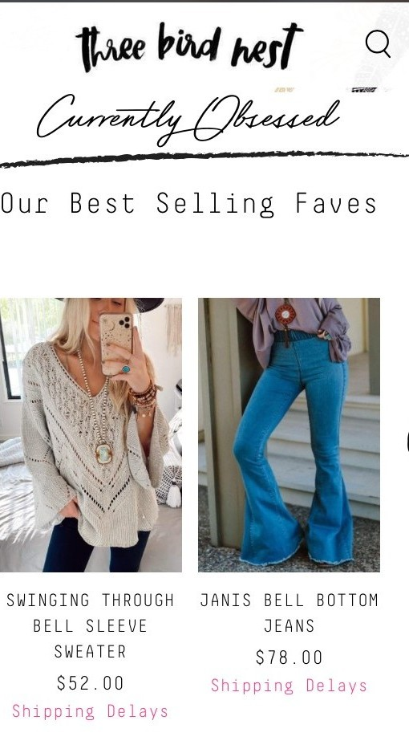

Repetition
Xomandyandsue
XomandyandsueIn the above example, one can see how well "Repetition" is used in the website "Xomandyandsue". The repeat of the four images boxed in their own space, one on top of the other keeps the pattern strong and inviting.
Contrast
Amazon
AmazonIn the next example, the use of "contrast" was greatly noticed. Amazon does a great job in using colors that contrast. Even the button that says "sign in" reminds the user to get involved and stay apart of their copmany.
White Space
Three Bird Nest
Three Bird Nest Finally in the third this was an interesting one. Sometimes too much white space can be a bad thing but in "Three Bird Nest" they have choosen a good balance of white space. Creating a clean, modern look to the overall look of the website design.